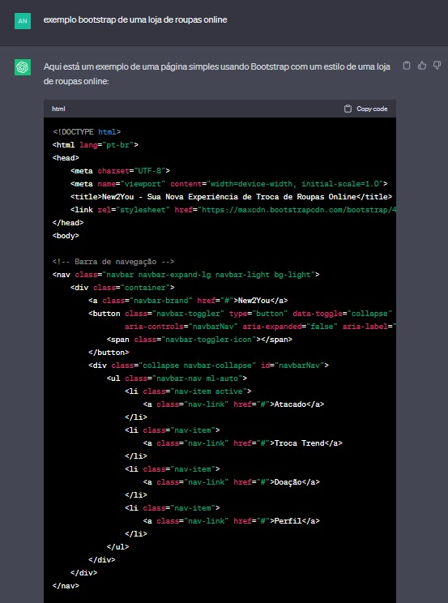

O site da New2You foi criado com a assistência do ChatGPT, uma poderosa inteligência artificial que ajuda a tornar a experiência online mais interativa e informativa. Com a ajuda do chatGPT conseguimos desenvolver um site que oferece uma nova experiência de troca de roupas online e muito mais para nossos usuários.
A conversa a seguir destaca como a inteligência artificial ChatGPT foi fundamental na criação e desenvolvimento do site da New2You.

Nós desenvolvemos o site com o auxílio do ChatGPT 3.5, utilizamos vídeos, a orientação de professores e dos colegas.
Com isto feito, precisaríamos de um texto de apresentação para o nosso site.